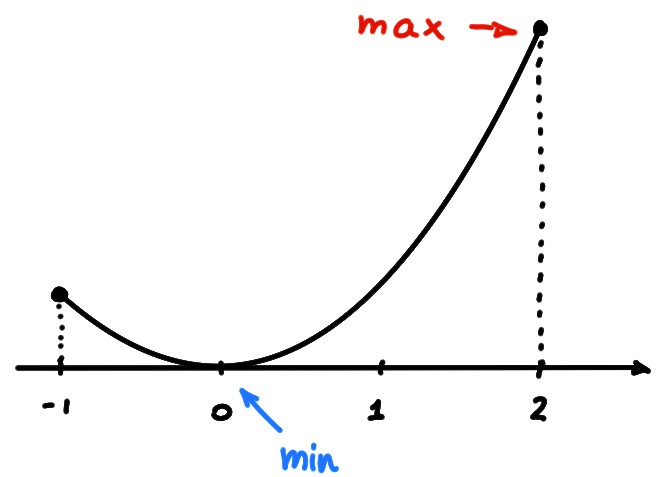
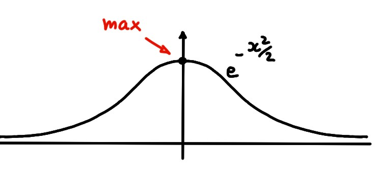
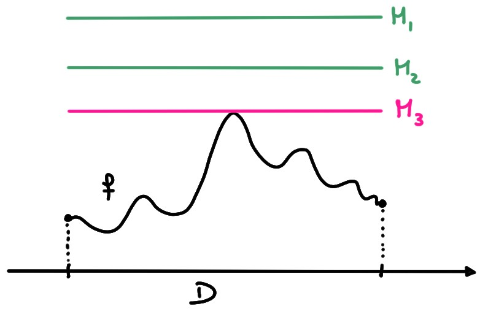
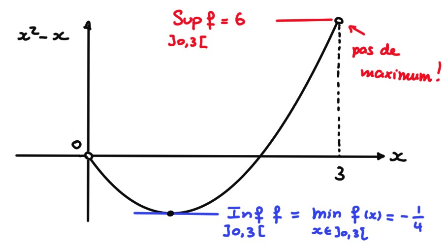
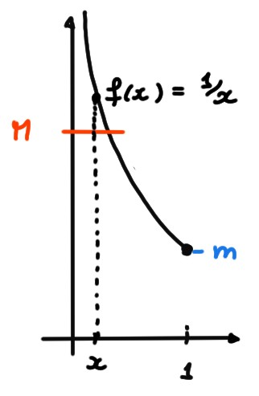

Attention: dans la vidéo ci-dessus, préparée pour un autre cours,
on mentionne la notion de continuité, qui n'apparaîtra ici que dans un
chapitre ultérieur.
Lorsqu'on cherche à résoudre un problème d'optimisation, il s'agit de
savoir si une fonction possède, sur son domaine,
des points où sa valeur est plus grande (ou plus petite):
Soit \(f:D\to\mathbb{R}\). On dit que
\(f\) possède un maximum (global) si il existe \(x^*\in D\) tel que
\[ f(x)\leqslant f(x^*) \quad \forall x\in D\,. \]
On dit que le maximum de \(f\) est réalisé/atteint en \(x^*\), et on
écrit
\[ \max_{x\in D}f(x)=f(x^*)\,.
\]
\(f\) possède un minimum (global) si il existe \(x_*\in D\) tel que
\[ f(x)\geqslant f(x_*) \quad \forall x\in D\,. \]
On dit que le minimum de \(f\) est réalisé/atteint en \(x_*\), et on
écrit
\[ \min_{x\in D}f(x)=f(x_*)\,.
\]
On parle de maximum/minimum global parce qu'on introduira plus loin la
notion de maximum/minimum local.
Attention: le point \(x^*\) (ou \(x_*\))
doit être dans le domaine de la fonction!
En général, l'existence d'un minimum et d'un maximum n'est pas garantie; elle
dépend de la fonction mais aussi de son domaine.
\[\begin{aligned}
f:[-1,2]&\to \mathbb{R}\\
x&\mapsto x^2
\end{aligned}\]
atteint son minimum en \(x_*=0\), et son maximum en \(x^*=2\):

Mais si on modifie un peu son domaine, par exemple
\[\begin{aligned}
f:[-1,2[&\to \mathbb{R}\\
x&\mapsto x^2,
\end{aligned}\]
alors cette fonction
atteint aussi son minimum en \(x_*=0\), mais elle ne possède pas de maximum
(maintenant, le point \(x=2\) ne fait plus partie du domaine!):
\[\begin{aligned}
g:\mathbb{R} &\to \mathbb{R}\,\\
x &\mapsto e^{-x^2/2}
\end{aligned}\]
atteint son maximum en \(x^*=0\), mais n'a pas de minimum:

En effet, cette fonction n'atteint son minimum en aucun point \(x\gt 0\) (resp.
\(x\lt 0\)), puisque
la valeur en un point un peu plus grand (resp. petit) est strictement
inférieure.
Minorants et majorants
\(f:D\to \mathbb{R}\) est
majorée si il existe \(M\in \mathbb{R}\) telle que \(f(x)\leqslant M\)
\(\forall x\in D\). On dit dans ce cas que \(M\) majore \(f\).
minorée si il existe \(m\in \mathbb{R}\) telle que \(f(x)\geqslant m\)
\(\forall x\in D\). On dit dans ce cas que \(m\) minore \(f\).
Si \(f\) est à la fois majorée et minorée, elle est bornée.
\(f(x)=\frac{x^2}{x^2+1}\) est minorée par \(m=0\) puisque
\(f(x)\geqslant 0\) pour tout \(x\), et majorée par \(M=1\) puisque
\[
f(x)=\frac{x^2+0}{x^2+1}\lt\frac{x^2+1}{x^2+1}=1\quad \forall x\,.
\]
Une fois qu'une fonction est majorée (resp. minorée), on peut chercher
le plus petit (resp. plus grand) majorant (resp. minorant).
Soit \(f:D\to\mathbb{R}\), et \(A\subset D\).
Si \(f\) est majorée (sur \(D\)),
la borne supérieure de \(f\) sur \(A\) est son plus petit majorant,
c'est-à-dire le nombre
\[ \sup_A f:= \sup_{x\in A}f(x)=\sup\{f(x)\,:\,x\in A\}=\sup(\mathrm{Im} (f))\,.\]
Si \(f\) n'est pas majorée sur \(A\), on pose \(\sup_Af:=+\infty\).
Si \(f\) est minorée sur \(D\),
la borne inférieure de \(f\) sur \(A\) est son plus grand minorant,
c'est-à-dire le nombre
\[ \inf_A f=\inf_{x\in A}f(x)=\inf\{f(x)\,:\,x\in A\}
=\inf(\mathrm{Im} (f))\,.\]
Si \(f\) n'est pas minorée sur \(A\), on pose \(\inf_Af:=-\infty\).
Sur la figure ci-dessous, les nombres
\(M_1,M_2\) et \(M_3\) sont tous des majorants pour \(f\). Le nombre
\(M_3\) étant le plus petit majorant (puisque tout nombre \(M'\lt M_3\) ne
majore plus \(f\)), c'est \(\sup_D f\):

Si \(f:D\to \mathbb{R}\) atteint son maximum en \(x^*\),
alors
\[\sup_{x\in D}f(x)=\max_{x\in D}f(x)=f(x^*)\,.\]
Si \(f:D\to \mathbb{R}\) atteint son minimum en \(x_*\),
alors
\[\inf_{x\in D}f(x)=\min_{x\in D}f(x)=f(x_*)\,.\]
Par les propriétés des réels, une fonction bornée possède toujours une borne
supérieure et une borne inférieure! Par contre, comme on sait, elle
peut ne pas atteindre son maximum ou son minimum, comme dans l'exemple suivant.
\(f:]0,3[\to\mathbb{R}\), \(x\mapsto x^2-x\) est majorée, car pour tout \(x\in ]0,3[\),
\[ f(x)=x^2-x\leqslant 3^2-0=9=M\]
En fait, dans ce cas, ce majorant \(M=9\) n'est pas le plus petit, car
\[ \sup_Df=6\,.\]
Remarquons par contre qu'il n'existe aucun \(x^*\in]0,3[ \) tel que
\(f(x^*)=6\), donc \(f\) n'a pas de maximum.
Remarquons ensuite que \(f\) est minorée car
\[ f(x)=x^2-x\geqslant 0^2-3=-3=m\]
Ici \(f\) possède un minimum, donné par \(f(x_*)=-\frac{1}{4}\).

\(f:]0,1]\to \mathbb{R}\), \(x\mapsto \frac{1}{x}\) est minorée car pour tout \(x\in
]0,1]\),
\[ f(x)=\frac{1}{x}\geqslant \frac{1}{1}=1=m\,.
\]
Mais elle n'est pas majorée, car pour tout \(M\gt 0\) (grand)
on peut prendre
\(x=\frac{1}{M}\in ]0,1]\), pour lequel \(f(x)=2M\gt M\).

On a donc \[\sup_{]0,1]}f=+\infty\,.\]
Par contre,
\[ \inf_{]0,1]}f=\min_{]0,1]}f=f(1)=1\,.
\]
Considérons \(g(x)=e^{-x^2/2}\).
On a vu que \(f\) atteint son maximum en \(x^*=0\)
\[ \sup_\mathbb{R} g=\max_\mathbb{R} g=g(0)=1\,, \]
et on a vu qu'elle n'a pas de minimum. Pourtant, elle est minorée par \(0\)
puisque \(e^{-x^2/2}\geqslant 0\) pour tout \(x\). Montrons que \(0\) est en fait la
plus grand minorant. En effet, si on prend un \(\varepsilon\gt 0\) quelconque fixé,
montrons qu'il existe au moins un réel \(x\) tel que \(0\leqslant e^{-x^2/2}\leqslant
\varepsilon\). En effet, on peut satisfaire cette condition en prenant
\(|x|>\sqrt{2|\ln(\varepsilon)|}\).
On conclut que
\[ \inf_\mathbb{R} g=0\,, \]
Listons quelques propriétés du supremum et de l'infimum d'une fonction:
Soit \(f:D\to \mathbb{R}\).
Si \(A\subset B\subset D\), alors
\(\displaystyle \sup_Af \leqslant \sup_B f\), et
\(\displaystyle \inf_A \geqslant \inf_B f\).